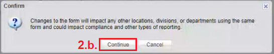
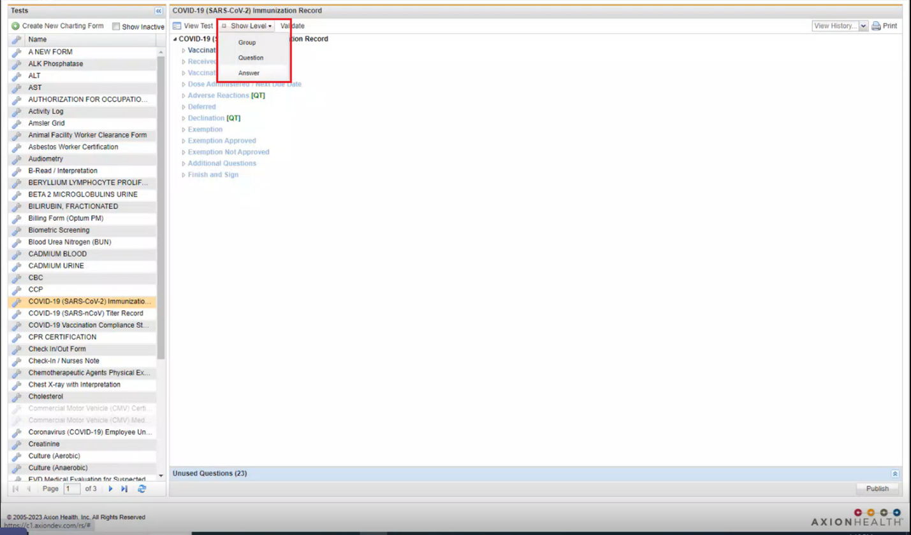
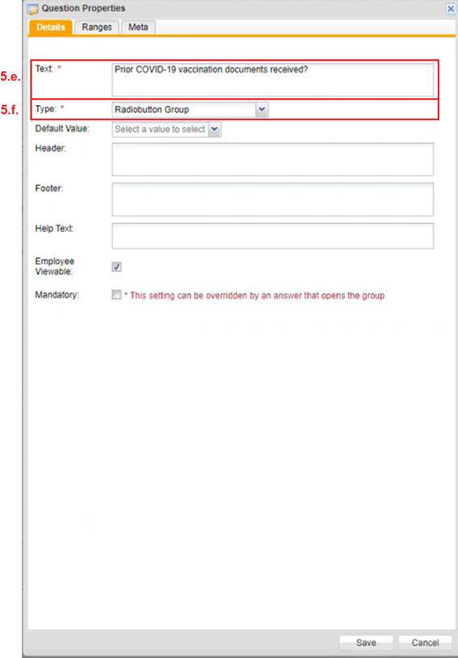
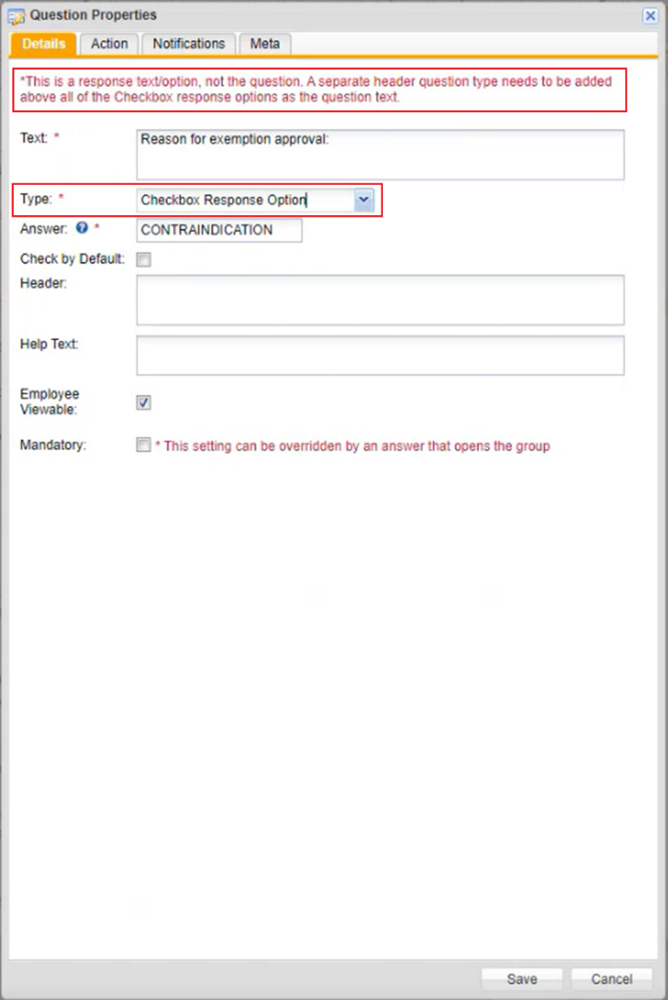
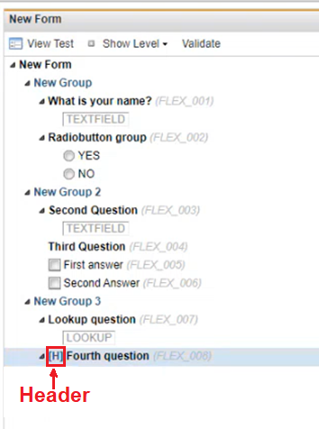

When Client Configuration is enabled, you can create custom forms.
Click the Client Config tab.
Form Config appears.
In the left navigation panel in Form Config, right click the form.
Two options display: Configure, and Properties.
If Properties is clicked, the properties window for the form opens. You can update the name, description, test type, where this form can be viewable, and a few other options on the form, and then click Save.
If Configure is clicked, the Forms Record displays to the right. If configure is clicked for the first time after a user logs in, a Confirm prompt displays, click Continue.

To edit a form, click the Show Level drop down menu, and then select an option.

These options are Group, Question, and Answer.
Click Answer.
This will provide the form within an editable format. Clicking Answer opens the form to the Answer Level.
Right click a question.
A menu displays with options: New Answer, Insert Question, Remove, and Properties.
Depending on the question not all of these options will be present for editing.
a. When New Answer is clicked, an additional answer can be added.
b. When Insert Question is clicked, a new question can be added.
c. When Remove is clicked, the question will be removed.
d. If Properties is selected, the Questions Properties window opens.

e. In the Text textbox, the wording of the existing question can be changed.
f. In the Type dropdown textbox, the response type can be selected and edited. The following are Types of responses that can be created:
Radio button Group – When this is selected, there can only be one answer choice. Best used for Yes, No, N/A responses or answers that require only one response when multiple options are available. You can add as many radio buttons as you want. Answers can be added and removed. In most cases, Radio buttons populate better in standard reports than any other changes you make.

Checkbox Response Option – when this is selected a message at the top appears instructing a separate header question type needs to be added above all the Checkbox response options as the question text. Checkboxes are column fields in the standard report. Responses are hard coded. Thus, if a checkbox response is added in a form, it will not show up in the standard report and instead the user will have to use the custom report.
Header – when this is selected, a message at the top appears, * Header question type should be used as the question text & accompanied by checkbox response options for response options. This option is different from the Header and Footer information fields.
Date Field – When selected, is used to customize when the date field populates.
The default options are: None, Current Date/Time, and Custom
None is the most commonly selected option. A calendar displays where users can select a date.
Current Date/Time auto populates the question with the current date and time
Custom allows us to pick a date that the client wants, to auto populate the question
The Format Mask for Time; HH24:MI
Lookup – when this is selected, the ORM dropdown textbox displays, for users to specifically select. When you want to use a pre-defined table for your answers.
Number Field – When this is selected, all values to be filled out are numeric.
This is used if the answer is only ever going to be a quantitative value
You can set parameters around what can be entered by setting decimal places, a maximum, a minimum and a default value.
Phone Field – When this is selected, you can input phone numbers that consist of only 10-digits.
Text Area – When this is selected, it allows the response to be more than one sentence. It allows for the user to expand on their answer. By default, Static is selected, which allows the Default Value to be blank. When Variable is selected in the Default Type section, a Variable dropdown textbox displays below. You can choose a variable. Fill in all other sections as needed, and then click Save.
Text Field – When this is selected, it allows the response to be short answers. When Variable is selected in the Default Type section, a Variable dropdown textbox displays below. You can choose a variable. Fill in all other sections as needed, and then click Save.
In the Header textbox of a new question window, users can input instructional messages.
This is not to be mistaken for the Header option found in the Type dropdown textbox.

Once the Header textbox is filled in and saved for a question, it will display above the question with an (H) for header.
In the Footer textbox, users can input instructional messages, that will display below the question with a (F) for footer.
When you click View Test at the top of the form window, you can view how the form will look for the end user in EHS Manager.